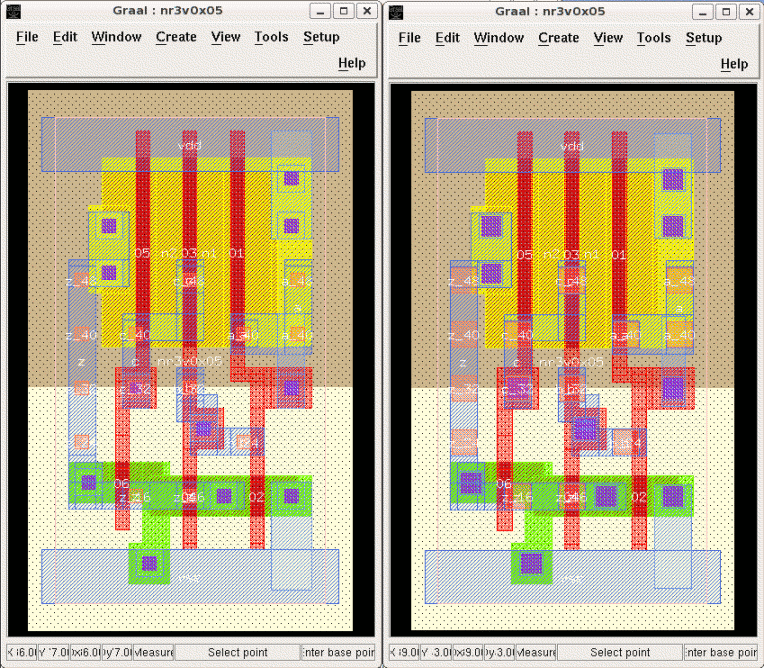

| vlsitechnology.org /Linux help/Graal rule sets | |
Graal rule sets | |
Linux help
Windows help
Linux Live CD
These two shots show the same vsclib cell viewed with different RDS files. The cell on the left uses a 2µm file vsc200.rds, while the cell on the right uses a 0.13µm file vsc013.rds. The impact of different design rules (like size of contact) can be seen visually.
Both are 2µm layouts, but the snap grids are different. With vsc200.rds the snap grid is 1λ; with vsc013.rds it is 1/11λ which corresponds to a value of λ=0.055µm and snap-grid=0.005µm. This odd snap grid makes editing layout with the vsc013.rds file tricky, and I recommend editing with the vsc200.rds file.
This ability to view the effects of layout rule changes by modifying the RDS file and without having to write CIF or GDS files is one of the significant advantages of Graal.
